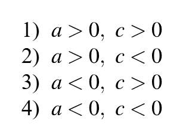
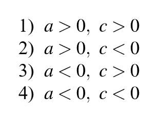
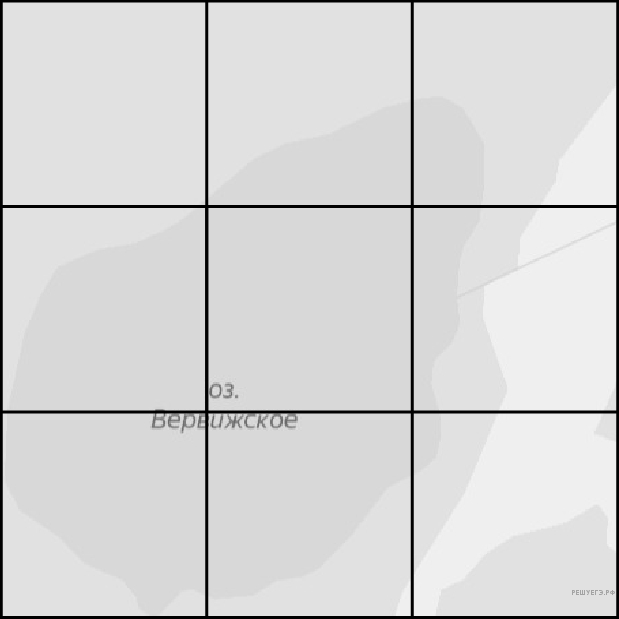
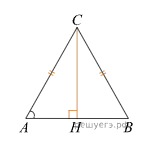
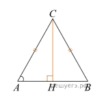

Поезд Хабаровск–Благовещенск отправляется в 13:57, а прибывает в
2:57 на следующий день (время московское). Сколько часов поезд
находится в пути? Б
Установите соответствие между величинами и их возможными значениями:
к каждому элементу первого столбца подберите соответствующий элемент
из второго столбца.

В таблице показано расписание пригородных электропоездов по
направлению Москва Курская — Тула.

Какой из указанных электропоездов Москва Курская— Тула проводит в
пути меньше всего времени? В ответе укажите номер этого
электропоезда.
Зная длину своего шага, человек может приближённо подсчитать
пройденное им расстояние s по формуле s = nl, где n — число шагов, l
— длина шага.
Какое расстояние прошёл человек, если l = 80cm, a n = 1700? Ответ дайте в метрах.
Какое расстояние прошёл человек, если l = 80cm, a n = 1700? Ответ дайте в метрах.
Какова вероятность того, что случайно выбранный телефонный номер
оканчивается двумя чётными цифрами?
Для того чтобы связать свитер, хозяйке нужно 600 граммов шерстяной
пряжи красного цвета. Можно купить красную пряжу по цене 60 рублей
за 50 граммов, а можно купить неокрашенную пряжу по цене 50 рублей
за 50 граммов и окрасить её. Один пакетик краски стоит 50 рублей и
рассчитан на окраску 300 граммов пряжи. Какой вариант покупки
дешевле? В ответе напишите, сколько рублей будет стоить эта покупка.
На рисунках изображены графики функций вида Установите соответствие
между графиками функций и знаками коэффициентов a и c.
 

Кондитер испёк 40 печений, из них 10 штук он посыпал корицей, а 20
штук собирается посыпать сахаром (кондитер может посыпать одно
печенье и корицей, и сахаром, а может вообще ничем не посыпать).
Выберите утверждения, которые будут верны при указанных условиях
независимо от того, какие печенья кондитер посыплет сахаром.
1)Найдётся 7 печений, которые ничем не посыпаны.
2)Найдётся 8 печений, посыпанных и сахаром, и корицей.
3)Если печенье посыпано корицей, то оно посыпано и сахаром.
4)Не может оказаться 12 печений, посыпанных и сахаром, и корицей.
1)Найдётся 7 печений, которые ничем не посыпаны.
2)Найдётся 8 печений, посыпанных и сахаром, и корицей.
3)Если печенье посыпано корицей, то оно посыпано и сахаром.
4)Не может оказаться 12 печений, посыпанных и сахаром, и корицей.
На рисунке изображён план местности (шаг сетки плана соответствует
расстоянию 1км на местности).
Оцените, скольким квадратным километрам равна площадь озера Вервижское, изображённого на плане. Ответ округлите до целого числа.
Оцените, скольким квадратным километрам равна площадь озера Вервижское, изображённого на плане. Ответ округлите до целого числа.

Дачный участок имеет форму прямоугольника со сторонами 25 метров и
40 метров.
Хозяин планирует обнести его забором и разделить таким же забором на две части, одна из которых имеет форму квадрата. Найдите суммарную длину забора в метрах.
Хозяин планирует обнести его забором и разделить таким же забором на две части, одна из которых имеет форму квадрата. Найдите суммарную длину забора в метрах.

Найдите площадь поверхности многогранника, изображенного на рисунке
(все двугранные углы прямые).

В треугольнике ABC AC=BC, высота CH равна 4. Найдите AC.
 
